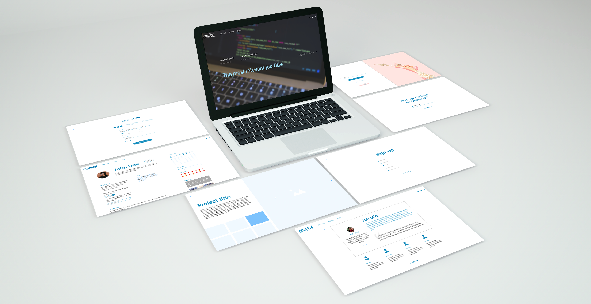

Omniket Freelancing Platform
UI/UX design for Omniket, a Balkan-oriented freelancing platform/marketplace.
Overview
Omniket is a freelancing platform startup, offering services similar to Upwork or Freelancer. However, aside from the typical freelancing but also includes practical (non-digital) services like plumbing, painting, cooking etc. It will start as a Serbian-focused platform, but is to scale up to cover the entirety of Balkan.
Problem and Solution Statement
Serbia does not have a well-developed system of integration of Internet into traditional brick-and-mortar service providers. Therefore, many over-40 year old small business owners lose out on potential leads and customers from a sheer lack of online presence. However, Serbia is one of the leading countries in terms of freelancers per capita. In 2018, Serbian revenue from outsourced IT services surpassed €1 billion.
Roles and Responsibilities
Our team consisted of a designer, two developers (front-end and back-end) and a product manager. I was the designer, in charge of everything from visual identity, UI and UX. After I'd come up with a solution, we would gather and discuss possible amendments and additions.
Scope and Constraints
Scope:
- Starts off as a Serbia-focused project, and then scales up to the entirety of Balkan.
- Some of the features included: registration, product listings, orders, contract generator, limiting revisions, etc.
- Administrative requirements/features: authentication, admin panel, CRUD operations, etc.
Limiting factors:
- Users: Lack of computer skills in above-40 category (requires very simple and intuitive design).
- Team size: since our team only consisted of four people, we needed to be as efficient as possible, and our expertise often merged together.
The Process

- Creating a backend list of requirements and features
- Forming the ‘Functional and Non-Functional Requirements’ document (organizing databases, processing registration requests, user-server interaction, etc.)
- Discussing user needs and forming a persona of a typical member
- Amending the functional requirements document
- Creating the first draft of the prototype in Adobe XD
- Peer review of the prototype, changing unclear steps in the use case and adding extra web pages for networking
- Developing the social networking aspect (adding “connections”, chatting options, blog posts and comments, etc.)
- Review of the second draft
- Further smaller amendments in clarifications, readability and usability
User personna

Outcomes and Results
Website Wireframes
Pages
Back to top